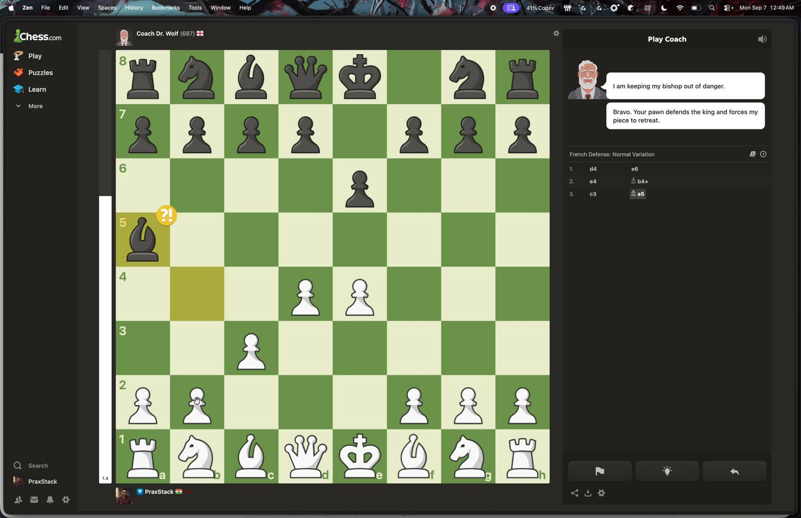
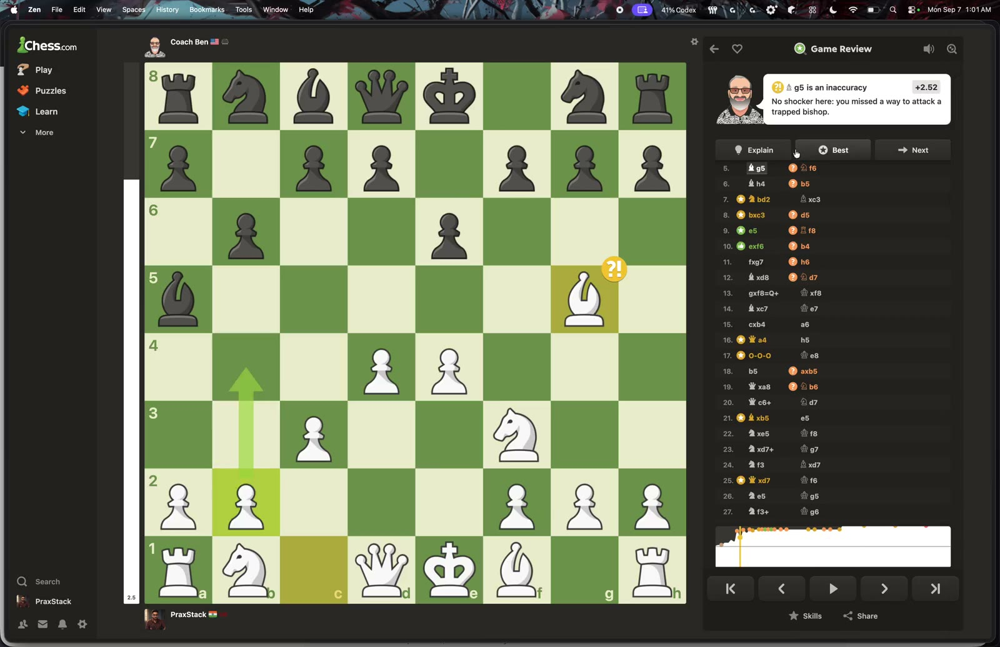
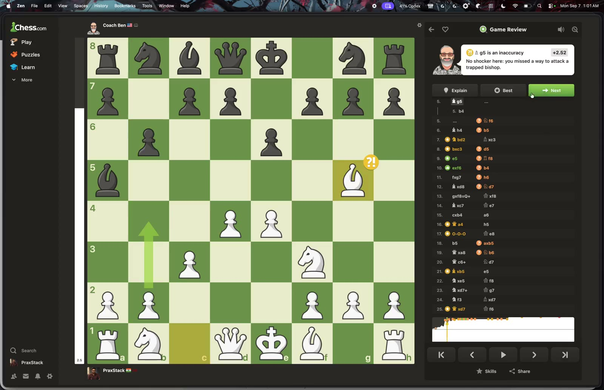

YOUR SESSION · 15 MINUTES 20 SECONDS
Watch the source.
The full recording, reduced from 636 MiB to 14.3 MiB. Audio retained; original untouched.



YOUR SESSION · 15 MINUTES 20 SECONDS
The full recording, reduced from 636 MiB to 14.3 MiB. Audio retained; original untouched.


